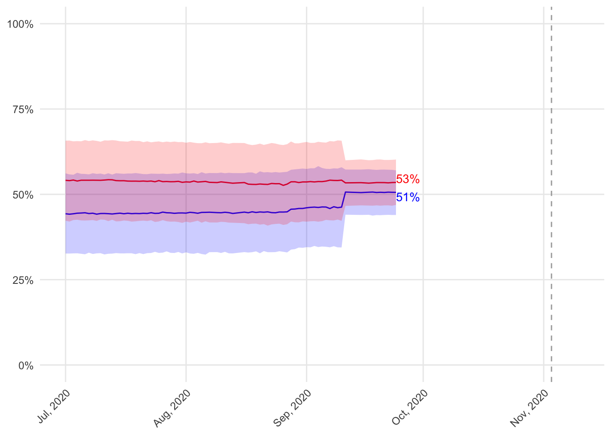
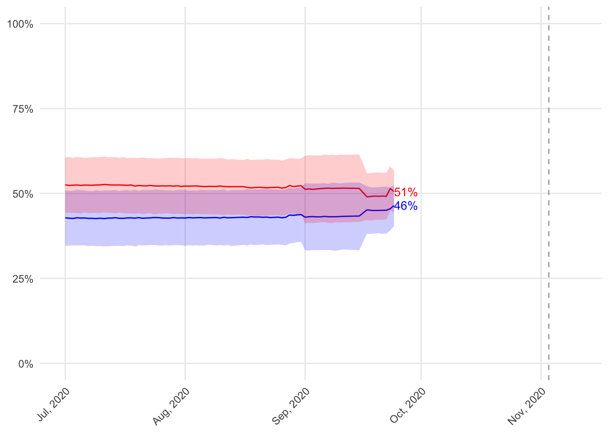
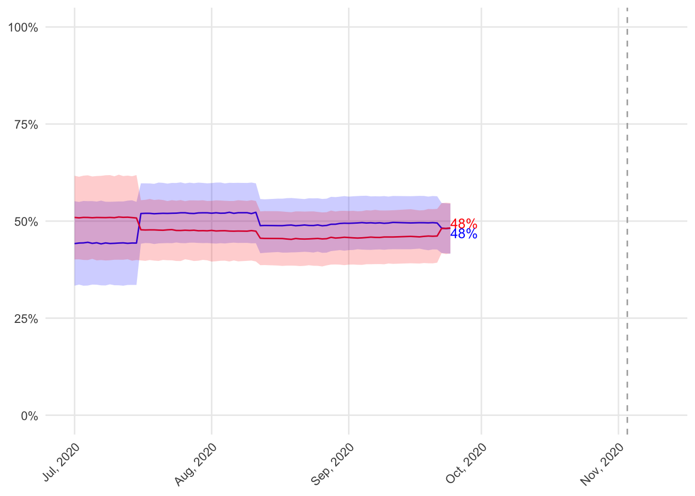
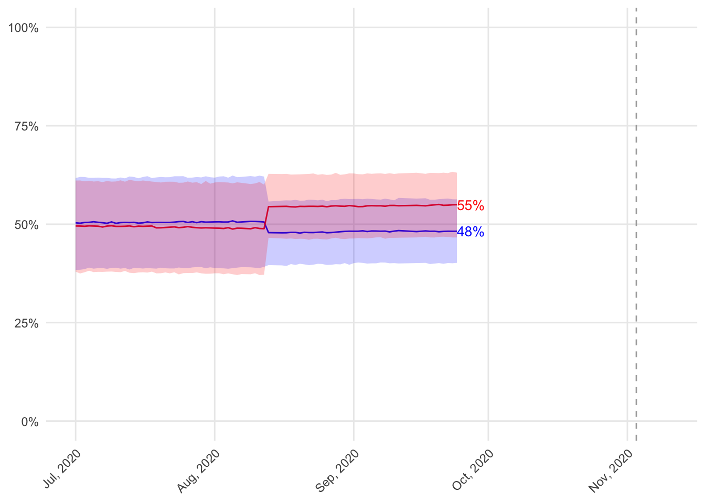
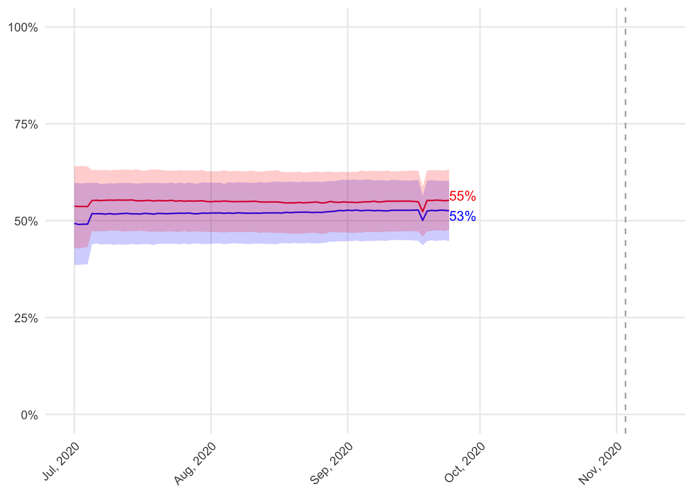
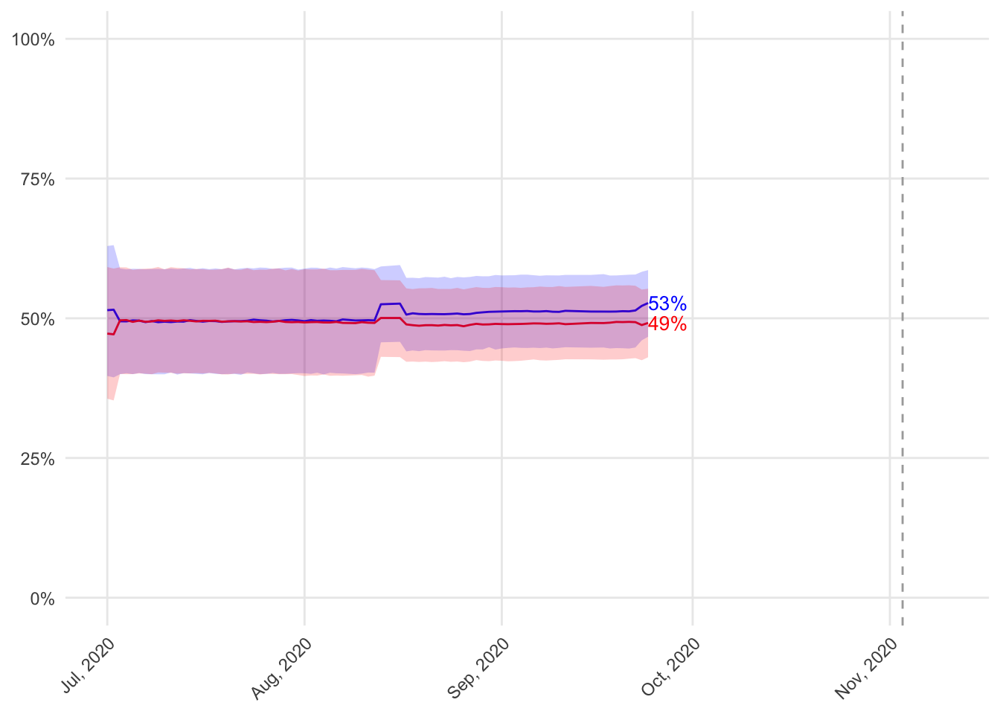
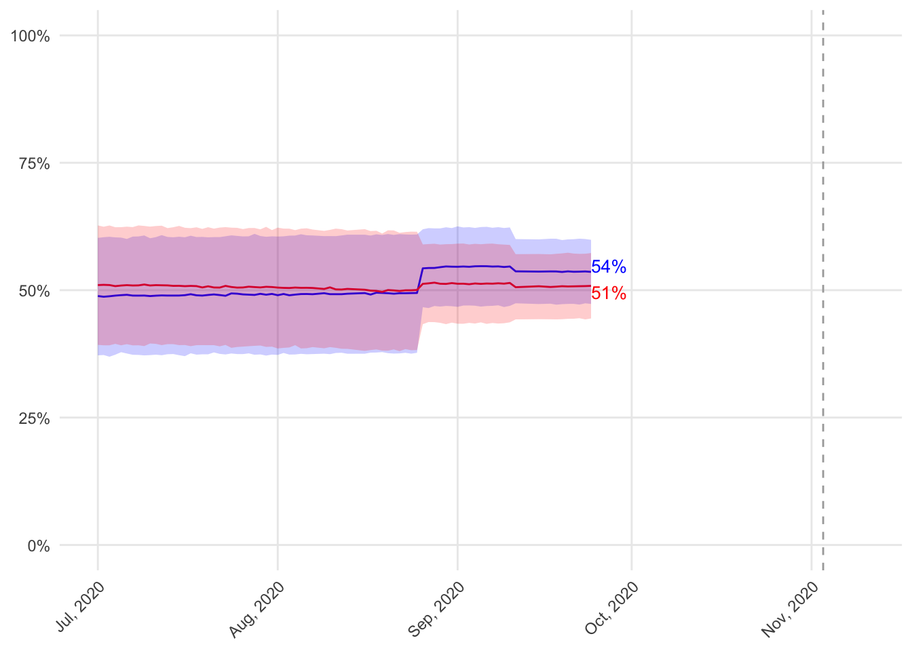
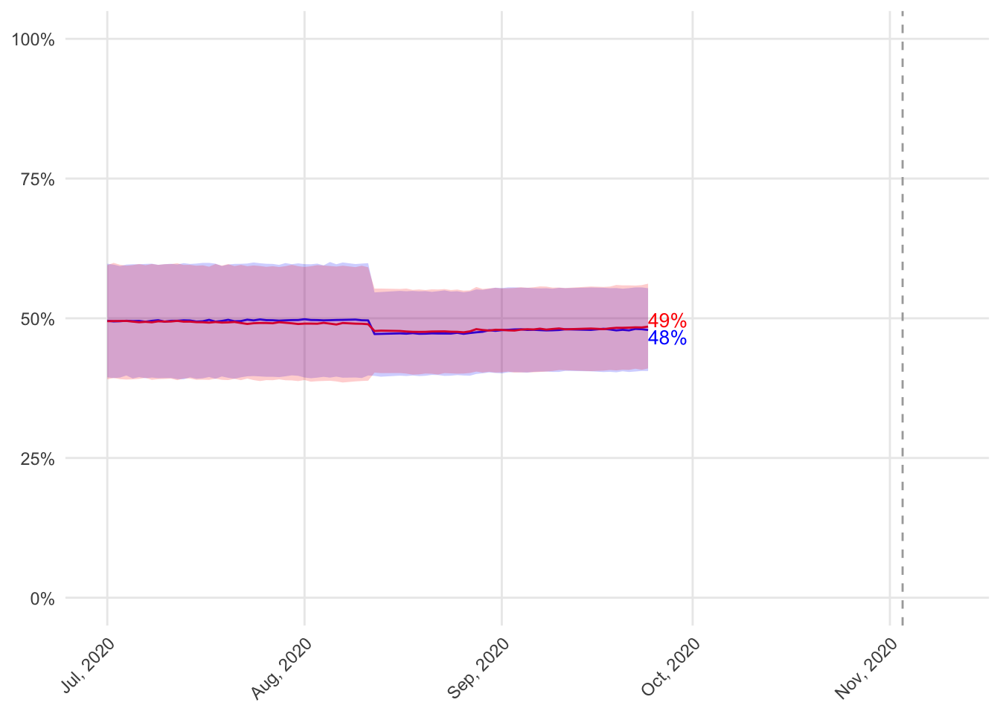
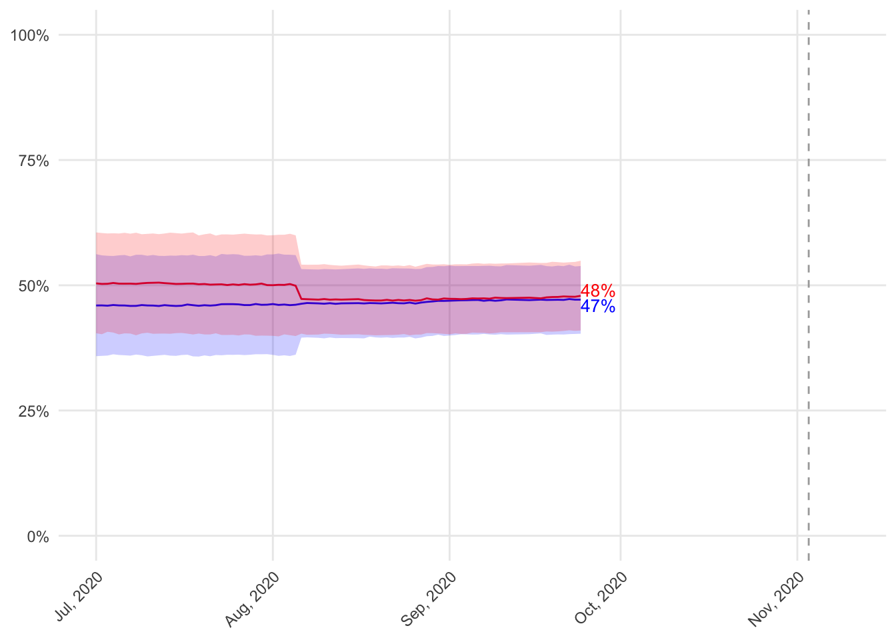

Competitive districts
Alaska-0
The Democrat is projected to receive between 35% and 58% of the vote in Alaska-0. The Republican is projected to receive between 43% and 66%. Out of 10000 simulations of the election in Alaska-0, the Democrat wins 14% and the Republican wins 85%.
Arizona-1
The Democrat is projected to receive between 43% and 65% of the vote in Arizona-1. The Republican is projected to receive between 36% and 59%. Out of 10000 simulations of the election in Arizona-1, the Democrat wins 77% and the Republican wins 23%.

Arizona-2
The Democrat is projected to receive between 43% and 66% of the vote in Arizona-2. The Republican is projected to receive between 36% and 58%. Out of 10000 simulations of the election in Arizona-2, the Democrat wins 80% and the Republican wins 20%.

Arizona-6
The Democrat is projected to receive between 42% and 56% of the vote in Arizona-6. The Republican is projected to receive between 46% and 60%. Out of 10000 simulations of the election in Arizona-6, the Democrat wins 10% and the Republican wins 90%.

Arkansas-2
The Democrat is projected to receive between 34% and 58% of the vote in Arkansas-2. The Republican is projected to receive between 42% and 66%. Out of 10000 simulations of the election in Arkansas-2, the Democrat wins 16% and the Republican wins 84%.

California-4
The Democrat is projected to receive between 39% and 54% of the vote in California-4. The Republican is projected to receive between 45% and 59%. Out of 10000 simulations of the election in California-4, the Democrat wins 12% and the Republican wins 88%.

California-7
The Democrat is projected to receive between 44% and 66% of the vote in California-7. The Republican is projected to receive between 35% and 58%. Out of 10000 simulations of the election in California-7, the Democrat wins 81% and the Republican wins 19%.

California-10
The Democrat is projected to receive between 41% and 63% of the vote in California-10. The Republican is projected to receive between 38% and 60%. Out of 10000 simulations of the election in California-10, the Democrat wins 69% and the Republican wins 30%.

California-21
The Democrat is projected to receive between 39% and 62% of the vote in California-21. The Republican is projected to receive between 40% and 63%. Out of 10000 simulations of the election in California-21, the Democrat wins 61% and the Republican wins 39%.

California-22
The Democrat is projected to receive between 36% and 59% of the vote in California-22. The Republican is projected to receive between 43% and 66%. Out of 10000 simulations of the election in California-22, the Democrat wins 17% and the Republican wins 83%.

California-25
The Democrat is projected to receive between 45% and 58% of the vote in California-25. The Republican is projected to receive between 44% and 57%. Out of 10000 simulations of the election in California-25, the Democrat wins 58% and the Republican wins 42%.

California-39
The Democrat is projected to receive between 44% and 60% of the vote in California-39. The Republican is projected to receive between 41% and 58%. Out of 10000 simulations of the election in California-39, the Democrat wins 66% and the Republican wins 33%.
California-45
The Democrat is projected to receive between 41% and 63% of the vote in California-45. The Republican is projected to receive between 38% and 61%. Out of 10000 simulations of the election in California-45, the Democrat wins 68% and the Republican wins 32%.

California-48
The Democrat is projected to receive between 42% and 65% of the vote in California-48. The Republican is projected to receive between 37% and 59%. Out of 10000 simulations of the election in California-48, the Democrat wins 75% and the Republican wins 25%.

California-50
The Democrat is projected to receive between 43% and 56% of the vote in California-50. The Republican is projected to receive between 46% and 59%. Out of 10000 simulations of the election in California-50, the Democrat wins 33% and the Republican wins 66%.

Colorado-3
The Democrat is projected to receive between 33% and 56% of the vote in Colorado-3. The Republican is projected to receive between 42% and 66%. Out of 10000 simulations of the election in Colorado-3, the Democrat wins 12% and the Republican wins 88%.

Colorado-6
The Democrat is projected to receive between 43% and 66% of the vote in Colorado-6. The Republican is projected to receive between 33% and 57%. Out of 10000 simulations of the election in Colorado-6, the Democrat wins 83% and the Republican wins 17%.
Connecticut-5
The Democrat is projected to receive between 45% and 67% of the vote in Connecticut-5. The Republican is projected to receive between 34% and 57%. Out of 10000 simulations of the election in Connecticut-5, the Democrat wins 84% and the Republican wins 16%.

Florida-15
The Democrat is projected to receive between 35% and 58% of the vote in Florida-15. The Republican is projected to receive between 43% and 66%. Out of 10000 simulations of the election in Florida-15, the Democrat wins 16% and the Republican wins 84%.

Florida-18
The Democrat is projected to receive between 34% and 57% of the vote in Florida-18. The Republican is projected to receive between 44% and 67%. Out of 10000 simulations of the election in Florida-18, the Democrat wins 12% and the Republican wins 88%.

Florida-26
The Democrat is projected to receive between 39% and 57% of the vote in Florida-26. The Republican is projected to receive between 43% and 61%. Out of 10000 simulations of the election in Florida-26, the Democrat wins 63% and the Republican wins 37%.

Florida-27
The Democrat is projected to receive between 41% and 56% of the vote in Florida-27. The Republican is projected to receive between 43% and 58%. Out of 10000 simulations of the election in Florida-27, the Democrat wins 73% and the Republican wins 27%.

Georgia-6
The Democrat is projected to receive between 47% and 60% of the vote in Georgia-6. The Republican is projected to receive between 45% and 59%. Out of 10000 simulations of the election in Georgia-6, the Democrat wins 62% and the Republican wins 38%.
Georgia-7
The Democrat is projected to receive between 38% and 56% of the vote in Georgia-7. The Republican is projected to receive between 39% and 58%. Out of 10000 simulations of the election in Georgia-7, the Democrat wins 44% and the Republican wins 55%.

Illinois-6
The Democrat is projected to receive between 42% and 65% of the vote in Illinois-6. The Republican is projected to receive between 36% and 59%. Out of 10000 simulations of the election in Illinois-6, the Democrat wins 76% and the Republican wins 24%.
Illinois-12
The Democrat is projected to receive between 35% and 57% of the vote in Illinois-12. The Republican is projected to receive between 42% and 65%. Out of 10000 simulations of the election in Illinois-12, the Democrat wins 15% and the Republican wins 84%.

Illinois-13
The Democrat is projected to receive between 40% and 56% of the vote in Illinois-13. The Republican is projected to receive between 40% and 56%. Out of 10000 simulations of the election in Illinois-13, the Democrat wins 25% and the Republican wins 75%.

Illinois-14
The Democrat is projected to receive between 41% and 64% of the vote in Illinois-14. The Republican is projected to receive between 37% and 60%. Out of 10000 simulations of the election in Illinois-14, the Democrat wins 69% and the Republican wins 30%.

Indiana-5
The Democrat is projected to receive between 43% and 58% of the vote in Indiana-5. The Republican is projected to receive between 46% and 61%. Out of 10000 simulations of the election in Indiana-5, the Democrat wins 28% and the Republican wins 72%.

Iowa-1
The Democrat is projected to receive between 43% and 62% of the vote in Iowa-1. The Republican is projected to receive between 39% and 58%. Out of 10000 simulations of the election in Iowa-1, the Democrat wins 71% and the Republican wins 29%.

Iowa-2
The Democrat is projected to receive between 41% and 58% of the vote in Iowa-2. The Republican is projected to receive between 37% and 54%. Out of 10000 simulations of the election in Iowa-2, the Democrat wins 72% and the Republican wins 27%.

Iowa-3
The Democrat is projected to receive between 45% and 60% of the vote in Iowa-3. The Republican is projected to receive between 41% and 57%. Out of 10000 simulations of the election in Iowa-3, the Democrat wins 64% and the Republican wins 36%.

Iowa-4
The Democrat is projected to receive between 36% and 59% of the vote in Iowa-4. The Republican is projected to receive between 41% and 64%. Out of 10000 simulations of the election in Iowa-4, the Democrat wins 20% and the Republican wins 80%.

Kansas-2
The Democrat is projected to receive between 40% and 54% of the vote in Kansas-2. The Republican is projected to receive between 42% and 56%. Out of 10000 simulations of the election in Kansas-2, the Democrat wins 25% and the Republican wins 75%.

Kansas-3
The Democrat is projected to receive between 43% and 65% of the vote in Kansas-3. The Republican is projected to receive between 34% and 57%. Out of 10000 simulations of the election in Kansas-3, the Democrat wins 80% and the Republican wins 19%.

Kentucky-6
The Democrat is projected to receive between 37% and 59% of the vote in Kentucky-6. The Republican is projected to receive between 41% and 65%. Out of 10000 simulations of the election in Kentucky-6, the Democrat wins 21% and the Republican wins 79%.

Maine-2
The Democrat is projected to receive between 45% and 59% of the vote in Maine-2. The Republican is projected to receive between 41% and 54%. Out of 10000 simulations of the election in Maine-2, the Democrat wins 61% and the Republican wins 39%.

Michigan-3
The Democrat is projected to receive between 33% and 53% of the vote in Michigan-3. The Republican is projected to receive between 41% and 61%. Out of 10000 simulations of the election in Michigan-3, the Democrat wins 25% and the Republican wins 75%.

Michigan-6
The Democrat is projected to receive between 43% and 56% of the vote in Michigan-6. The Republican is projected to receive between 39% and 53%. Out of 10000 simulations of the election in Michigan-6, the Democrat wins 28% and the Republican wins 72%.

Michigan-7
The Democrat is projected to receive between 34% and 57% of the vote in Michigan-7. The Republican is projected to receive between 44% and 67%. Out of 10000 simulations of the election in Michigan-7, the Democrat wins 13% and the Republican wins 87%.

Michigan-8
The Democrat is projected to receive between 40% and 63% of the vote in Michigan-8. The Republican is projected to receive between 37% and 60%. Out of 10000 simulations of the election in Michigan-8, the Democrat wins 68% and the Republican wins 32%.

Michigan-11
The Democrat is projected to receive between 41% and 64% of the vote in Michigan-11. The Republican is projected to receive between 36% and 59%. Out of 10000 simulations of the election in Michigan-11, the Democrat wins 75% and the Republican wins 25%.

Minnesota-1
The Democrat is projected to receive between 41% and 55% of the vote in Minnesota-1. The Republican is projected to receive between 43% and 57%. Out of 10000 simulations of the election in Minnesota-1, the Democrat wins 30% and the Republican wins 70%.

Minnesota-2
The Democrat is projected to receive between 41% and 64% of the vote in Minnesota-2. The Republican is projected to receive between 37% and 60%. Out of 10000 simulations of the election in Minnesota-2, the Democrat wins 71% and the Republican wins 29%.

Minnesota-3
The Democrat is projected to receive between 44% and 67% of the vote in Minnesota-3. The Republican is projected to receive between 34% and 57%. Out of 10000 simulations of the election in Minnesota-3, the Democrat wins 71% and the Republican wins 29%.

Minnesota-7
The Democrat is projected to receive between 40% and 56% of the vote in Minnesota-7. The Republican is projected to receive between 47% and 63%. Out of 10000 simulations of the election in Minnesota-7, the Democrat wins 69% and the Republican wins 31%.

Minnesota-8
The Democrat is projected to receive between 35% and 57% of the vote in Minnesota-8. The Republican is projected to receive between 41% and 64%. Out of 10000 simulations of the election in Minnesota-8, the Democrat wins 17% and the Republican wins 83%.

Missouri-2
The Democrat is projected to receive between 43% and 56% of the vote in Missouri-2. The Republican is projected to receive between 42% and 56%. Out of 10000 simulations of the election in Missouri-2, the Democrat wins 14% and the Republican wins 86%.

Montana-0
The Democrat is projected to receive between 35% and 58% of the vote in Montana-0. The Republican is projected to receive between 41% and 64%. Out of 10000 simulations of the election in Montana-0, the Democrat wins 32% and the Republican wins 68%.

Nebraska-2
The Democrat is projected to receive between 45% and 60% of the vote in Nebraska-2. The Republican is projected to receive between 47% and 63%. Out of 10000 simulations of the election in Nebraska-2, the Democrat wins 24% and the Republican wins 76%.

Nevada-3
The Democrat is projected to receive between 41% and 64% of the vote in Nevada-3. The Republican is projected to receive between 34% and 57%. Out of 10000 simulations of the election in Nevada-3, the Democrat wins 79% and the Republican wins 21%.

Nevada-4
The Democrat is projected to receive between 41% and 64% of the vote in Nevada-4. The Republican is projected to receive between 35% and 58%. Out of 10000 simulations of the election in Nevada-4, the Democrat wins 77% and the Republican wins 23%.

New Hampshire-1
The Democrat is projected to receive between 42% and 65% of the vote in New Hampshire-1. The Republican is projected to receive between 35% and 58%. Out of 10000 simulations of the election in New Hampshire-1, the Democrat wins 77% and the Republican wins 23%.

New Jersey-2
The Democrat is projected to receive between 45% and 58% of the vote in New Jersey-2. The Republican is projected to receive between 43% and 56%. Out of 10000 simulations of the election in New Jersey-2, the Democrat wins 37% and the Republican wins 63%.

New Jersey-3
The Democrat is projected to receive between 41% and 59% of the vote in New Jersey-3. The Republican is projected to receive between 39% and 58%. Out of 10000 simulations of the election in New Jersey-3, the Democrat wins 62% and the Republican wins 38%.

New Jersey-7
The Democrat is projected to receive between 40% and 63% of the vote in New Jersey-7. The Republican is projected to receive between 37% and 60%. Out of 10000 simulations of the election in New Jersey-7, the Democrat wins 71% and the Republican wins 29%.

New Mexico-2
The Democrat is projected to receive between 42% and 59% of the vote in New Mexico-2. The Republican is projected to receive between 41% and 60%. Out of 10000 simulations of the election in New Mexico-2, the Democrat wins 64% and the Republican wins 36%.

New York-1
The Democrat is projected to receive between 41% and 54% of the vote in New York-1. The Republican is projected to receive between 46% and 59%. Out of 10000 simulations of the election in New York-1, the Democrat wins 19% and the Republican wins 81%.

New York-2
The Democrat is projected to receive between 35% and 58% of the vote in New York-2. The Republican is projected to receive between 43% and 66%. Out of 10000 simulations of the election in New York-2, the Democrat wins 27% and the Republican wins 73%.

New York-11
The Democrat is projected to receive between 41% and 64% of the vote in New York-11. The Republican is projected to receive between 37% and 60%. Out of 10000 simulations of the election in New York-11, the Democrat wins 74% and the Republican wins 26%.

New York-18
The Democrat is projected to receive between 44% and 67% of the vote in New York-18. The Republican is projected to receive between 34% and 58%. Out of 10000 simulations of the election in New York-18, the Democrat wins 83% and the Republican wins 17%.

New York-19
The Democrat is projected to receive between 40% and 63% of the vote in New York-19. The Republican is projected to receive between 37% and 60%. Out of 10000 simulations of the election in New York-19, the Democrat wins 71% and the Republican wins 29%.

New York-22
The Democrat is projected to receive between 39% and 62% of the vote in New York-22. The Republican is projected to receive between 39% and 62%. Out of 10000 simulations of the election in New York-22, the Democrat wins 63% and the Republican wins 37%.

New York-24
The Democrat is projected to receive between 42% and 54% of the vote in New York-24. The Republican is projected to receive between 46% and 59%. Out of 10000 simulations of the election in New York-24, the Democrat wins 31% and the Republican wins 69%.

New York-27
The Democrat is projected to receive between 38% and 61% of the vote in New York-27. The Republican is projected to receive between 40% and 63%. Out of 10000 simulations of the election in New York-27, the Democrat wins 41% and the Republican wins 59%.

North Carolina-2
The Democrat is projected to receive between 35% and 58% of the vote in North Carolina-2. The Republican is projected to receive between 42% and 65%. Out of 10000 simulations of the election in North Carolina-2, the Democrat wins 29% and the Republican wins 71%.
North Carolina-8
The Democrat is projected to receive between 38% and 53% of the vote in North Carolina-8. The Republican is projected to receive between 42% and 58%. Out of 10000 simulations of the election in North Carolina-8, the Democrat wins 9% and the Republican wins 90%.

North Carolina-9
The Democrat is projected to receive between 38% and 61% of the vote in North Carolina-9. The Republican is projected to receive between 39% and 63%. Out of 10000 simulations of the election in North Carolina-9, the Democrat wins 26% and the Republican wins 74%.

North Carolina-13
The Democrat is projected to receive between 35% and 57% of the vote in North Carolina-13. The Republican is projected to receive between 42% and 65%. Out of 10000 simulations of the election in North Carolina-13, the Democrat wins 16% and the Republican wins 84%.

Ohio-1
The Democrat is projected to receive between 46% and 59% of the vote in Ohio-1. The Republican is projected to receive between 46% and 59%. Out of 10000 simulations of the election in Ohio-1, the Democrat wins 13% and the Republican wins 87%.

Ohio-12
The Democrat is projected to receive between 36% and 59% of the vote in Ohio-12. The Republican is projected to receive between 42% and 65%. Out of 10000 simulations of the election in Ohio-12, the Democrat wins 19% and the Republican wins 81%.

Oklahoma-5
The Democrat is projected to receive between 47% and 62% of the vote in Oklahoma-5. The Republican is projected to receive between 44% and 59%. Out of 10000 simulations of the election in Oklahoma-5, the Democrat wins 62% and the Republican wins 38%.

Pennsylvania-7
The Democrat is projected to receive between 43% and 66% of the vote in Pennsylvania-7. The Republican is projected to receive between 34% and 57%. Out of 10000 simulations of the election in Pennsylvania-7, the Democrat wins 80% and the Republican wins 20%.

Pennsylvania-8
The Democrat is projected to receive between 43% and 66% of the vote in Pennsylvania-8. The Republican is projected to receive between 35% and 58%. Out of 10000 simulations of the election in Pennsylvania-8, the Democrat wins 80% and the Republican wins 20%.

Pennsylvania-10
The Democrat is projected to receive between 46% and 59% of the vote in Pennsylvania-10. The Republican is projected to receive between 46% and 59%. Out of 10000 simulations of the election in Pennsylvania-10, the Democrat wins 18% and the Republican wins 82%.

South Carolina-1
The Democrat is projected to receive between 39% and 60% of the vote in South Carolina-1. The Republican is projected to receive between 40% and 60%. Out of 10000 simulations of the election in South Carolina-1, the Democrat wins 60% and the Republican wins 40%.

Texas-2
The Democrat is projected to receive between 34% and 57% of the vote in Texas-2. The Republican is projected to receive between 43% and 66%. Out of 10000 simulations of the election in Texas-2, the Democrat wins 14% and the Republican wins 86%.

Texas-6
The Democrat is projected to receive between 36% and 55% of the vote in Texas-6. The Republican is projected to receive between 44% and 63%. Out of 10000 simulations of the election in Texas-6, the Democrat wins 18% and the Republican wins 81%.

Texas-7
The Democrat is projected to receive between 42% and 64% of the vote in Texas-7. The Republican is projected to receive between 38% and 61%. Out of 10000 simulations of the election in Texas-7, the Democrat wins 70% and the Republican wins 30%.

Texas-10
The Democrat is projected to receive between 37% and 53% of the vote in Texas-10. The Republican is projected to receive between 43% and 59%. Out of 10000 simulations of the election in Texas-10, the Democrat wins 19% and the Republican wins 81%.

Texas-17
The Democrat is projected to receive between 40% and 53% of the vote in Texas-17. The Republican is projected to receive between 44% and 58%. Out of 10000 simulations of the election in Texas-17, the Democrat wins 12% and the Republican wins 88%.

Texas-21
The Democrat is projected to receive between 45% and 57% of the vote in Texas-21. The Republican is projected to receive between 46% and 59%. Out of 10000 simulations of the election in Texas-21, the Democrat wins 22% and the Republican wins 78%.

Texas-22
The Democrat is projected to receive between 35% and 58% of the vote in Texas-22. The Republican is projected to receive between 42% and 65%. Out of 10000 simulations of the election in Texas-22, the Democrat wins 30% and the Republican wins 70%.

Texas-23
The Democrat is projected to receive between 40% and 55% of the vote in Texas-23. The Republican is projected to receive between 41% and 55%. Out of 10000 simulations of the election in Texas-23, the Democrat wins 52% and the Republican wins 48%.

Texas-24
The Democrat is projected to receive between 40% and 54% of the vote in Texas-24. The Republican is projected to receive between 41% and 54%. Out of 10000 simulations of the election in Texas-24, the Democrat wins 34% and the Republican wins 66%.

Texas-31
The Democrat is projected to receive between 37% and 59% of the vote in Texas-31. The Republican is projected to receive between 41% and 64%. Out of 10000 simulations of the election in Texas-31, the Democrat wins 21% and the Republican wins 79%.

Texas-32
The Democrat is projected to receive between 41% and 64% of the vote in Texas-32. The Republican is projected to receive between 36% and 59%. Out of 10000 simulations of the election in Texas-32, the Democrat wins 74% and the Republican wins 26%.

Utah-4
The Democrat is projected to receive between 39% and 61% of the vote in Utah-4. The Republican is projected to receive between 40% and 63%. Out of 10000 simulations of the election in Utah-4, the Democrat wins 59% and the Republican wins 40%.

Virginia-2
The Democrat is projected to receive between 43% and 61% of the vote in Virginia-2. The Republican is projected to receive between 43% and 61%. Out of 10000 simulations of the election in Virginia-2, the Democrat wins 64% and the Republican wins 35%.

Virginia-5
The Democrat is projected to receive between 40% and 54% of the vote in Virginia-5. The Republican is projected to receive between 44% and 58%. Out of 10000 simulations of the election in Virginia-5, the Democrat wins 21% and the Republican wins 79%.

Virginia-7
The Democrat is projected to receive between 39% and 62% of the vote in Virginia-7. The Republican is projected to receive between 38% and 62%. Out of 10000 simulations of the election in Virginia-7, the Democrat wins 63% and the Republican wins 36%.

Washington-3
The Democrat is projected to receive between 38% and 54% of the vote in Washington-3. The Republican is projected to receive between 43% and 59%. Out of 10000 simulations of the election in Washington-3, the Democrat wins 16% and the Republican wins 84%.

Washington-8
The Democrat is projected to receive between 41% and 64% of the vote in Washington-8. The Republican is projected to receive between 38% and 60%. Out of 10000 simulations of the election in Washington-8, the Democrat wins 70% and the Republican wins 30%.